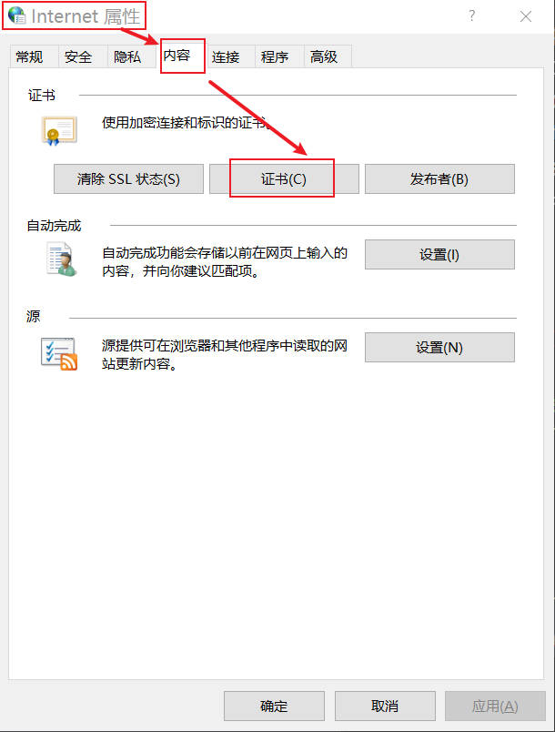
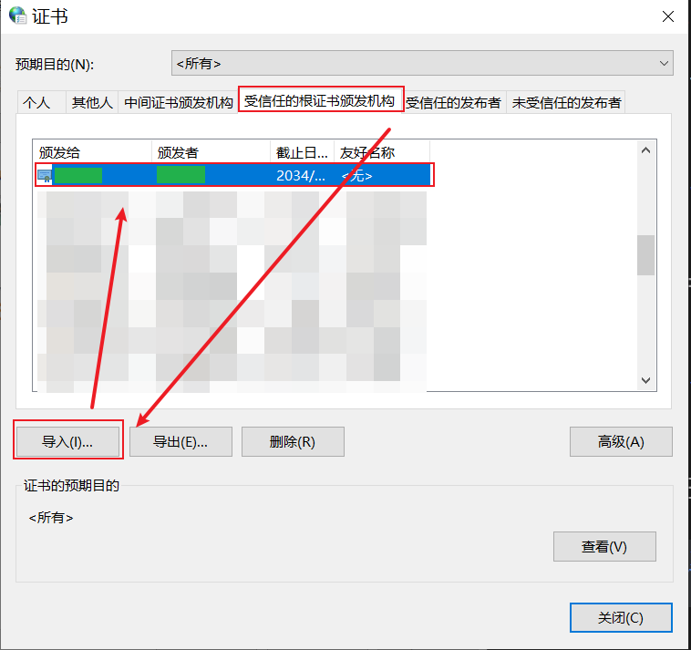
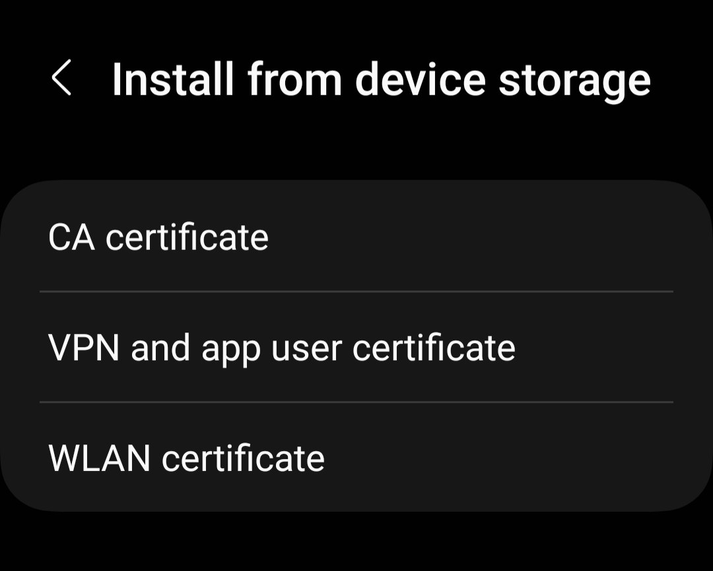
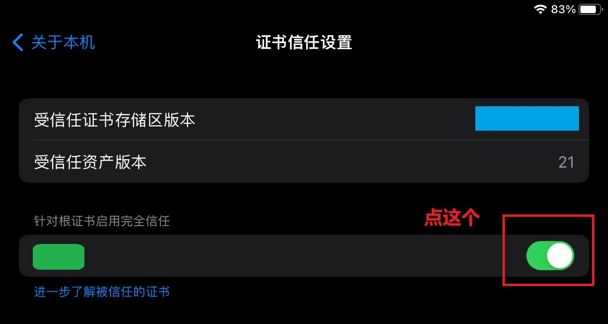

Deploying Nginx in Docker and Configuring SSL Certificate for Local Network
Preface
In my previous post, I successfully set up a LANraragi server and shared it with other devices in my home LAN. However, new issues arose:
- LANraragi could be accessed without logging in.
- Even if LANraragi had a login feature, it still used HTTP plaintext transmission, which is equivalent to no password protection.
The root cause of these issues was that devices like smartphones and smart home devices, connected to the LAN, were not trustworthy. They could potentially have backdoors (or ‘users voluntarily transmitting private data to improve service’). Anyway, these issues needed urgent resolution.
The solution is Nginx:
- Use Nginx’s built-in basic authentication to allow access only with a correct username and password.
- Utilize Nginx’s reverse proxy feature. Once Nginx is configured with HTTPS, any software being proxied can use the encrypted transmission.
Therefore, the key lies in the configuration of Nginx and SSL certificates. The challenge is that I need to request a certificate for an internal IP address without a corresponding domain name. This article explores these solutions, marking my first encounter with Nginx and SSL certificate configuration.
Nginx Container
Obtain the Default Configuration File
Create a temporary container, copy the nginx.conf from it:
1 | docker run --name tmp-nginx-container -d nginx:1.24 |
Docker Compose
1 | version: "3" |
- Besides the configuration file, map a directory to store SSL private key and certificate.
- Choose the bridge network mode; otherwise, other containers cannot be accessed.
- Only map the
443port, while I have no intention to open the80port.
SSL Certificate
Create a CA
Create a CA key myCAPK.key and a (self-signed) certificate myCACertificate.crt:
1 | openssl req -x509 -sha256 -nodes -days 3650 -newkey rsa:4096 -keyout myCAPK.key -out myCACertificate.crt |
The private key and certificate generated by this command can be directly used for Nginx server. However, if another server also needs an SSL certificate, client devices need to manually trust the new certificate, which is troublesome.
If this certificate is used as a CA certificate, as long as devices trust this certificate, all other certificates signed by this CA will be automatically trusted. Therefore, devices only need to manually add the CA certificate only once.
Check Certificate Information
1 | openssl x509 -text -noout -in myCACertificate.crt |
Trust the CA
As this CA certificate is self-created, the system won’t recognize it, so it needs to be installed.
Without this step, the browser can still establish an HTTPS connection but will prompt that the connection is not secure.
Windows
Control Panel | Internet Options | Content | Certificates

Trust the CA as a root certificate authority.

Android
Different systems have different locations for installing certificates, but the basic options are the same. Here’s an example for Samsung:
Either choose ‘CA certificates’ or ‘VPN and app user certificates’. Do not choose ‘WLAN certificates’; it does not work.

IOS
Using iPadOS 15.7 as an example
-
Open your email, send the CA certificate as an attachment to yourself.
-
Using the Safari browser, log in to your email, click the attachment, and select “Download Profile” (a prompt will appear: ‘go to settings to confirm installation’).
-
Go to settings, select “Install Profile,” enter your lock screen password.
-
Settings | General | About | Certificate Trust Settings: Enable full trust.

Create Server Key
1 | openssl genrsa -out nginx_server.key 4096 |
Create Server CSR (Certificate Signing Request)
Create openssl.cnf with the following content:
1 | authorityKeyIdentifier=keyid,issuer |
The configuration file can be more complex, but for this case, these few configurations are sufficient.
DNS.xcorresponds to hostname/domain.IP.xcorresponds to IP addresses.
xis a positive integer.
The only purpose of this file is to bind the server’s domain name and IP with the certificate during CA signing, indicating that the certificate indeed belongs to that server and not someone else pretending. Without this configuration, the browser would show an error: NET::ERR_CERT_COMMON_NAME_INVALID.
Use the following command to create the CSR:
1 | openssl req -new -key nginx_server.key -out nginx_server.csr |
CA Signing
1 | openssl x509 -req -extfile openssl.cnf -in nginx_server.csr -CA /opt/MyOwnCA/myCACertificate.crt -CAkey /opt/MyOwnCA/myCAPK.key -CAcreateserial -out nginx_server.crt -days 398 |
Why set
-days 398? – According to Apple’s new policy，server’s certificate cannot exceed 398 days, otherwise SSL connection errors occur（NET::ERR_CERT_VALIDITY_TOO_LONG. Note that only Apple requires this. If we are sure that the website will not be accessed by any Apple devices, setting it to 10 years is also ok.
After signing, you will get the private key nginx_server.key and certificate nginx_server.crt ready to be used in Nginx.
Nginx Configuration
SSL
1 | server { |
This is just the basic configuration; there are more SSL directives in practice, but these are sufficient for now.
Basic Authentication
1️⃣First, create a username and password:
1 | # Create the file if it doesn't exist |
Then, the system will prompt to set a password for the alpha user. To add multiple users, use the same command:
1 | htpasswd /opt/docker/nginx_auth/.htpasswd-lanraragi beta |
On CentOS, the
htpasswdcommand belongs tohttpd-tools. If not installed, the system will prompt to install it.
2️⃣Configure in Nginx：
1 | location /api { |
auth_basicprompts a message to user on the login page；auth_basic_user_filepoints to the previously created.htpasswd；
It can also be enabled globally and disabled for specific URLs:
1 | server { |
Example: Lanraragi
Let’s come back to the initial demand: reverse proxy Lanraragi and provide a login feature.
Docker compose:
1 | version: "3" |
Nginx configuration:
1 | user nginx; |
Lanraragi’s own routing strategy cannot be changed, which means / must be mapped as-is to Lanraragi’s URI. In other words, Lanraragi needs a separate Nginx instance.
From a computational resources perspective, this isn’t a big deal, as one Nginx instance uses less than 20 MB of memory.
If each existing software gets its own Nginx, these Nginx instances can share a single SSL certificate. After all, when accessing the Linux host, it tells Nginx instances from each other by port, and the certificate is bound to IP/domain. Although this is a solution, I’m not sure if it’s the best practice. However, in a home LAN scenario, it is clearly sufficient.
References
- ChatGPT
- HTTPS using Nginx and Let’s encrypt in Docker
- Creating a Self-Signed Certificate With OpenSSL
- Nginx Docker hub
- 局域网内搭建浏览器可信任的SSL证书
- How To Create a Self-Signed SSL Certificate for Nginx in Ubuntu 16.04
- How to generate a self-signed SSL certificate using OpenSSL?
- Restricting Access with HTTP Basic Authentication
- 在iOS设备上安装根证书(CA)
- Enabling self-signed certificates in iOS 15
- Apple: About upcoming limits on trusted certificates